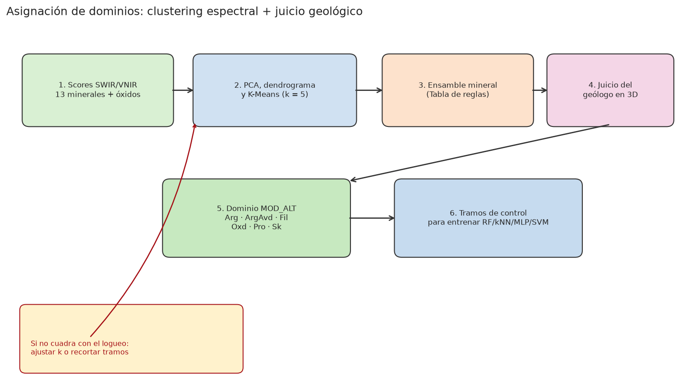

Delimitación de dominios geológicos de alteración mediante firmas espectrales, geoquímica y aprendizaje automático¶
Tesis de pregrado. Flujo cuantitativo para clasificar dominios de alteración hidrotermal a partir de espectrometría SWIR–VNIR, geoquímica de sondaje y criterio geológico: seis clases mineralógicas y comparación de clasificadores supervisados.
La hipótesis de trabajo es que el aprendizaje no supervisado (PCA, agrupamiento
jerárquico y K-Means) propone agrupaciones espectrales, pero el dominio
geológico (MOD_ALT) se define cuando el geólogo valida el ensamble diagnóstico
y la continuidad espacial. El clasificador supervisado —Random Forest en
esta investigación— extiende esa firma al resto de la malla. El repositorio
reproduce el flujo con datos sintéticos de los mismos ensambles, sin
geometría de la unidad de calibración.
Recorrido de lectura¶
El visor condensa la tesis. No es necesario seguir el orden capitular:
1 · Mapa de lectura Correspondencia entre preguntas de investigación y secciones del visor.
2 · Resumen y abstract Problema, seis dominios y desempeño relativo de los clasificadores.
3 · Asignación de dominios
Etapa crítica: clustering espectral y corte geológico de MOD_ALT.
4 · Replicación experimental Orange, Google Colab o pipeline en Python sobre el conjunto sintético.
-
Tesis resumida
Capítulos condensados, figuras del flujo y el PDF (páginas 1–151).
-
Orange o Google Colab
Reproducción del experimento sin entorno Python local (lienzo de widgets o cuaderno en la nube).
-
Implementación en Python
Paquete
alteration_ml, datos sintéticos, pruebas automáticas y plantilla para sondajes propios.
Esquema metodológico¶
flowchart LR
A[Espectro SWIR/VNIR] --> C[No supervisado<br/>PCA · K-Means]
B[Geoquímica] --> D[Supervisado<br/>RF · kNN · MLP · SVM]
C --> G[Geólogo firma<br/>MOD_ALT]
G --> D
D --> E[Predicción 3D]
Cómo citar¶
Formatos IEEE y APA 7
IEEE. Mallma Espinoza, J., “Delimitación de los dominios geológicos de alteración desde firmas espectrales y geoquímica mediante el empleo de machine learning” [Tesis de pregrado]. Lima, Perú: Universidad Nacional de Ingeniería, 2026.
APA 7. Mallma, J. (2026). Delimitación de los dominios geológicos de alteración desde firmas espectrales y geoquímica mediante el empleo de machine learning [Tesis de pregrado, Universidad Nacional de Ingeniería]. Repositorio institucional Cybertesis UNI.
ORCID del autor: 0009-0007-5912-5915 · Asesor: 0009-0009-5452-3636.
Filiación y contacto¶
Sitio publicado: jhon21geo.github.io/geologia-ML-dominios-alteracion.1
-
La dirección
jhonatanmallma.github.io/...no corresponde a este repositorio (muestra 404). ↩